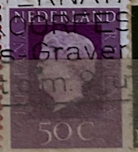
| SOURCE | TITLE| IMAGE MATCH | click to source page |
| HipStamp | Browse Products in Europe / HipStamp | 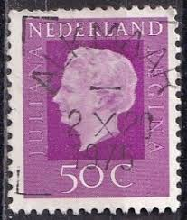 |
| Alamy | Queen juliana of the netherlands hi-res stock photography and images - Alamy | 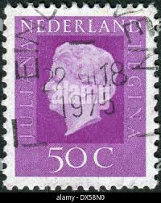 |
| Alamy | Dutch postage stamp hi-res stock photography and images - Page 3 - Alamy | 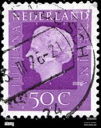 |
| Alamy | Netherlands queen juliana stamp hi-res stock photography and images - Alamy | 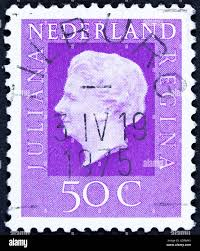 |
| Dreamstime.com | Queen Juliana 1909-2004, Queen Juliana - Type `Regina ` Serie, Circa 1972 Editorial Stock Photo - Image of moscow, famous: 139147653 | 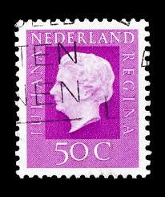 |
| Dreamstime.com | Netherlands, Stamp,Numbers, Numeral Editorial Image - Image of mail, post: 104417605 | 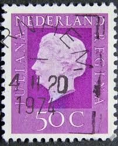 |
| smartsmile.net.br | 50 Different Special Stamps Netherlands - Personal Stamps Series Canon Of The Netherlands Prophila Stamps For Collectors | 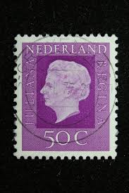 |
| Shutterstock | Netherlands Circa 1972 Post Stamp Printed Stock Photo 1088036090 | Shutterstock | 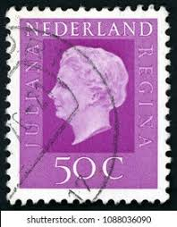 |
| eBay | Netherlands Postage ~ Queen Juliana ~ Brown 10₵ Stamp ~Used/Posted ~1953 ~ B06 | eBay | 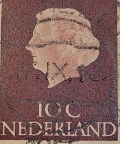 |
| eBay | Niederlande, Königin Juliana Regina, NEDERLAND 30 C | eBay | 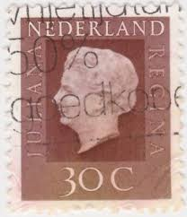 |
| eBay | Brown Royalty Used Canadian Stamps for sale | eBay |  |
| eBay | Nederland Foreign 75c Purple Stamp Used - #A571 | eBay | 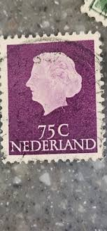 |
| eBay | George VI (1936-1952) Used Canadian Stamps for sale | eBay | 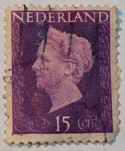 |
| Dreamstime.com | 2,399 Holland Stamp Stock Photos - Free & Royalty-Free Stock Photos from Dreamstime | 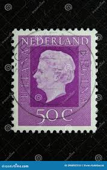 |
| Etsy | Silver 1944 High Grade Ten Cents Netherlands World Coin Antique Vintage Authentic Great 1.00 Shipping - Etsy | 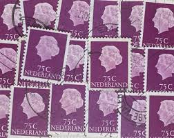 |
| HipStamp | Netherlands #359 80c Queen Juliana | Europe - Netherlands & Colonies, General Issue Stamp / HipStamp |  |
| eBay | Royalty Elizabeth II (1952-2022) Era Used Canadian Stamps for sale | eBay |  |
| Alamy | NETHERLANDS - CIRCA 1949: A stamp printed in the Netherlands shows Queen Juliana, circa 1949 Stock Photo - Alamy | 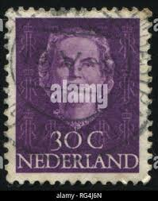 |
| Dreamstime.com | 298 Queen 1953 Stock Photos - Free & Royalty-Free Stock Photos from Dreamstime | 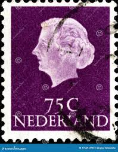 |
| Rawpixel | POSTCARD STAMPS | Free Photo - rawpixel | 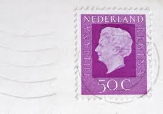 |
| Photo by Filateli (@filateli_collection) · November 2, 2025 | 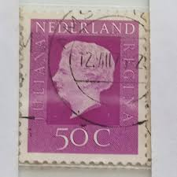 | |
| Shutterstock | 97+ Thousand Queen Wilhelmina Of The Netherlands Royalty-Free Images, Stock Photos & Pictures | Shutterstock | 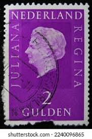 |
| eBay | Brown Royalty Elizabeth II (1952-2022) Era Canadian Stamps for sale | eBay |  |
| eBay UK | Vintage Stamp NETHERLANDS Nederland Queen Wilhelmina 10c Fuchsia Used - #5834 | eBay UK | 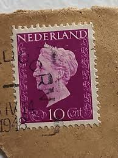 |
| iStock | Two Old Postage Stamps From The Netherlands Stock Photo - Download Image Now - Business, Collection, Communication - iStock | 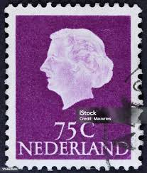 |
| eBay | Purple Royalty Elizabeth II (1952-2022) Era Canadian Stamps for sale | eBay | 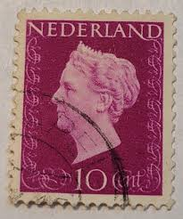 |
| Colnect | Stamp: Queen Juliana (1909-2004), Type 'Regina' - from Booklet (Netherlands(Queen Juliana - 1969-1981 - Type 'Regina' from Booklet) Mi:NL 978Dr,Yt:NL 948a(A),AFA:NL 977Ch,NVP:NL 945K 📮 | 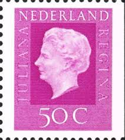 |
| Jace Stamps | Netherlands Scott 461 Used - C$0.15 : Jace Stamps, Quality Stamps since 1997 | 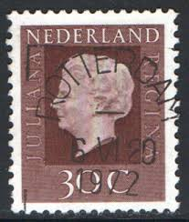 |
| eBay | Vintage Stamp NETHERLANDS Nederland Queen Wilhelmina 10c Fuchsia Used - #5834 | eBay | 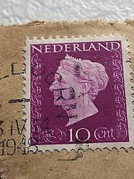 |
| HipStamp | Netherlands #464 50c Queen Juliana | Europe - Netherlands & Colonies, General Issue Stamp / HipStamp | 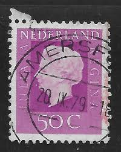 |
| Shutterstock | 1+ Hundred Princess Regnant Royalty-Free Images, Stock Photos & Pictures | Shutterstock | 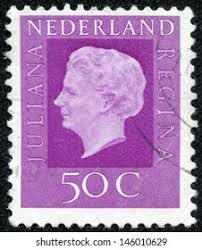 |
| ebid.net | Netherlands 1972 - 50c violet - Queen Juliana - used on eBid United States | 205168087 | 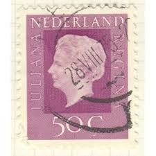 |
| Dreamstime.com | Queen Wilhelmina editorial photography. Image of shows - 328176572 | 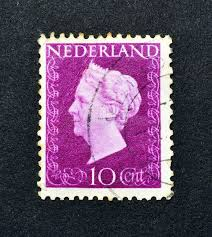 |
| eBay | VTG 16 Foreign Stamps Canada 1976 Olympics France 1991 German Netherlands Swiss | eBay | 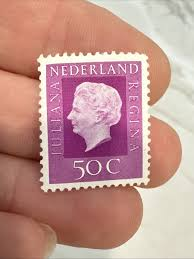 |
| Mercari | 1947 Netherlands 10c Stamp - Queen Wilhelmina | Mercari | 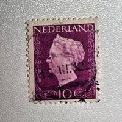 |
| OnlineStampShop | Netherlands Postage Stamps | 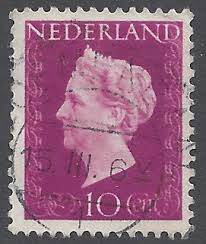 |
| eBay | Netherlands Postage ~ Queen Juliana ~ Brown 10₵ Stamp ~Cancelled/Posted ~1953-15 | eBay |  |
| iStock | Stamp Printed In Netherlands Shows Portrait Of Queen Juliana Stock Photo - Download Image Now - iStock | 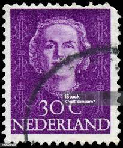 |
| Dreamstime.com | NETHERLANDS - CIRCA 1949: a Stamp Printed in Netherlands, Shows Portrait of Queen Juliana, Monogram and a Crown without Editorial Photography - Image of retro, postmark: 184392062 | 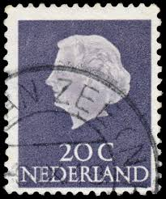 |
| eBay | Dutch Miniature Sheet Topical Postal Stamps for sale | eBay | 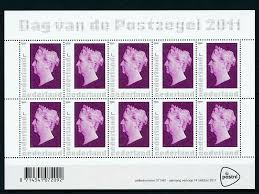 |
| Alamy | NETHERLANDS - CIRCA 1970: a stamp printed in Netherlands shows Transition Phases of Concentric Circles with Increasing Diameters, Design made by Compu Stock Photo - Alamy | 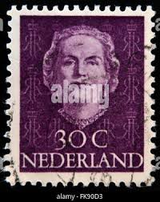 |
| eBay | Brown Royalty Elizabeth II (1952-2022) Era Canadian Stamps for sale | eBay |  |
| eBay | NETHERLANDS 1947-1948 Queen Wilhelmina 10c (HBX) | eBay | 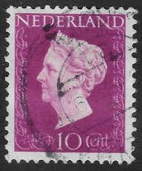 |
| Alamy | Postage stamp from the Netherlands in the series issued in 1953 Stock Photo - Alamy | 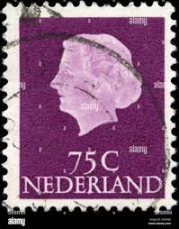 |
| eBay | Las mejores ofertas en Royalty Isabel II (1952-2022) era usado estampillas de Canadá | eBay |  |
| eBay | 2x Netherlands 1969-72, 2 & 5G Queen Juliana, Type Regina, FU on Paper | eBay | 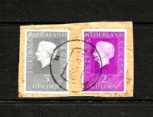 |
| eBay | Black Elizabeth II (1952-2022) Era Canadian Stamps for sale | eBay | 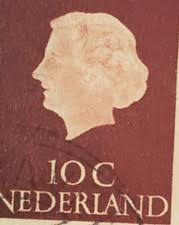 |
| eCRATER | Netherlands Postage Stamp 1947 Scott# NL 289 Used 10 c Queen Wilhelmina (1880-1962) C | 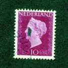 |
| eBay | Netherlands - 1953 Queen Juliana #5 | eBay | 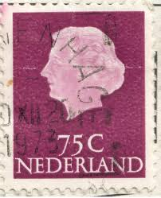 |
| Alamy | NETHERLANDS - CIRCA 1949: a stamp printed in the Netherlands shows Post Horns Entwined, 75th Anniversary of the UPU, circa 1949 Stock Photo - Alamy | 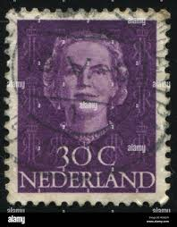 |
| eBay | Netherlands Postage ~ Queen Juliana ~ Brown 10₵ Stamp ~Used/Posted ~1953 ~ N42 | eBay | 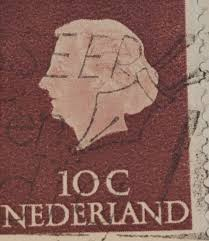 |
| Etsy | Queen Juliana Stamps - Etsy | 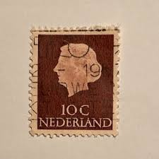 |
| Colnect | Stamp: Queen Juliana (1909-2004) - Phosphorescent Paper (Netherlands(Queen Juliana - 1967-1971 - Type 'En Profile' phosphorescent) Mi:NL 629XyA,Yt:NL 609a,AFA:NL 631F,NVP:NL 633b,Un:NL 609F 📮 |  |
| Flickr | stamps Nederland Netherland | Flickr | 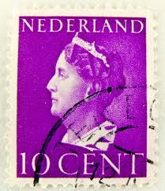 |
| Shutterstock | Netherlands Stamp: Over 6,835 Royalty-Free Licensable Stock Photos | Shutterstock | 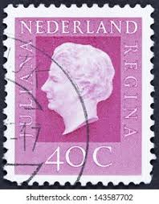 |
| perfinmania.hu | Netherlands – perfinmania | 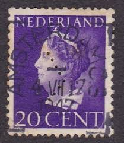 |
| eBay | Las mejores ofertas en Royalty Isabel II (1952-2022) era usado estampillas de Canadá | eBay | 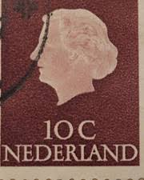 |
| WorthPoint | Netherlands New Guinea 1962 85 cent UNTEA INVERTED overprint and Kiss print on R | #4649680756 | |
| eBay | Netherlands Postage ~ Queen Juliana ~ Brown 10₵ Stamp ~ Posted ~1953 ~ B182 | eBay | |
| Live Auction World | Qty 10 Collectible Stamps: Republique Francaise, Nederland, Canada, US Postage Misc Value, etc |